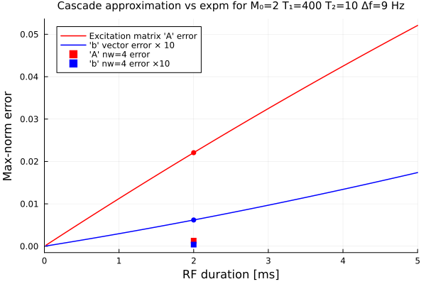
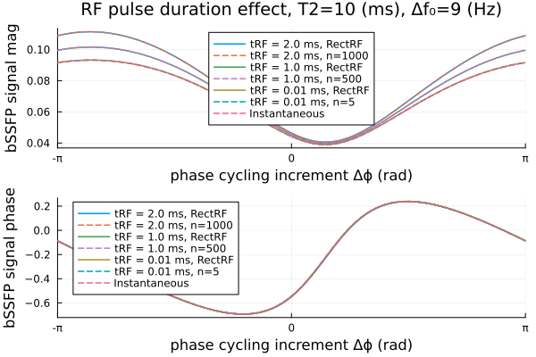
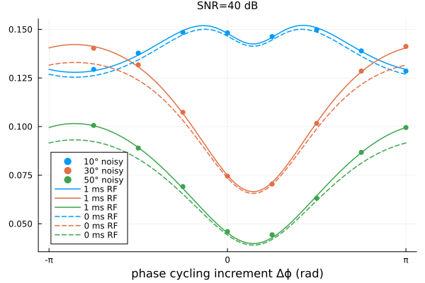
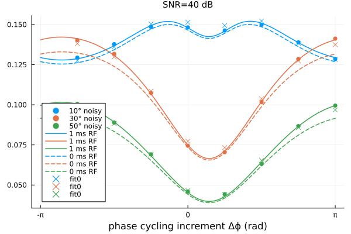
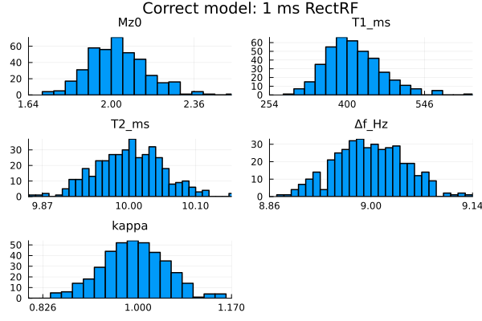
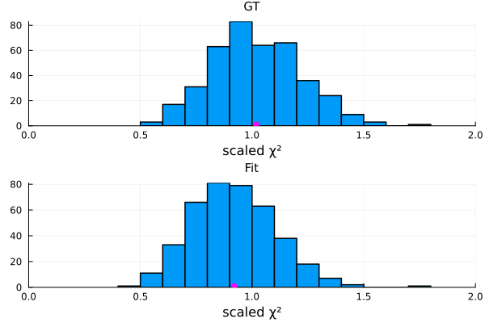
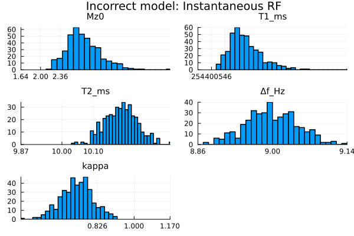
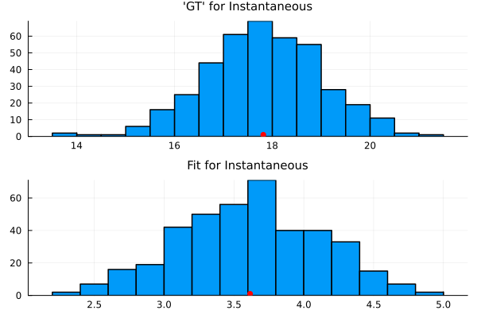

bSSFP RF Duration
This page illustrates using the Julia package BlochSim to calculate MRI signals for balanced steady-state free precession (bSSFP) pulse sequences.
Specifically it examines the effects of finite RF pulse duration for quantifying the parameters of a single isochromat (1-pool model).
References
- Bieri & Scheffler, MRM 62(5):1232-41, Nov 2009: SSFP signal with finite RF pulses.
This page comes from a single Julia file: bssfp-rf-dur.jl.
You can access the source code for such Julia documentation using the 'Edit on GitHub' link in the top right. You can view the corresponding notebook in nbviewer here: bssfp-rf-dur.ipynb, or open it in binder here: bssfp-rf-dur.ipynb.
Setup
First we add the Julia packages that are need for this demo. Change false to true in the following code block if you are using any of the following packages for the first time.
if false
import Pkg
Pkg.add([
"ADTypes"
"BlochSim"
"InteractiveUtils"
"LaTeXStrings"
"LinearAlgebra"
"MIRTjim"
"Optim"
"Plots"
"Random"
])
endTell this Julia session to use the following packages for this example. Run Pkg.add() in the preceding code block first, if needed.
using ADTypes: AutoForwardDiff
using Optim: optimize # must precede BlochSim for extension
using BlochSim: Spin, InstantaneousRF, RF, RectRF, excite
using BlochSim: bssfp, GAMMA, expm_bloch3, excite_bloch3, RF1, b1_gauss
using BlochSim: crb, real_imag, snr2sigma, fit_signal
using LinearAlgebra: diag, norm
using MIRTjim: prompt
using Plots: default, gui, histogram, histogram!, plot, plot!, scatter!
using Random: seed!
default(titlefontsize = 10, markerstrokecolor = :auto, label="", width = 1.5,
linewidth = 2)
seed!(0);The following line is helpful when running this file as a script; this way it will prompt user to hit a key after each figure is displayed.
isinteractive() || prompt(:draw);RF pulse duration effects for 1-pool model
Examine effects of finite RF pulse duration for a single spin with a relatively short T2.
Mz0, T1_ms, T2_ms, Δf_Hz = 2, 400, 10, 9 # tissue parameters
kappa = 1 # also estimate the B1+ factor
xt = (; Mz0, T1_ms, T2_ms, Δf_Hz, kappa) # tuple
x = collect(Float64, xt) # unknowns in vector
α_deg = 50 # flip angle °
TR_ms, TE_ms, α_rad = 8, 4, deg2rad(α_deg) # scan parameters
spin = Spin(Mz0, T1_ms, T2_ms, Δf_Hz)
Δϕ_rad = range(-1, 1, 101) * π # phase-cycling factors for plot
_bssfp(TE_ms, Δϕ, rf) = bssfp(Mz0, T1_ms, T2_ms, Δf_Hz, TR_ms, TE_ms, Δϕ, rf)
_bssfp(TE_ms, rf) = map(Δϕ -> _bssfp(TE_ms, Δϕ, rf), Δϕ_rad) # helper
rf0 = InstantaneousRF(α_rad)
signal0te = _bssfp(TE_ms, rf0); # signal for InstantaneousRF at TETest "nearly instantaneous" RF pulse
rf1 = RF1(α_rad, 1e-12) # super-short for first test
signal1te = _bssfp(TE_ms, rf1)
@assert signal0te ≈ signal1te # should be essentially identical
@assert α_rad == rf0.α ≈ only(rf1.α)RectRF pulse with very short duration
rf30 = RectRF(1e-7, α_rad) # super-short for first test
signal30te = _bssfp(TE_ms, rf30)
@assert maximum(abs, signal30te - signal0te) ≤ 1e-8Test 2ms RF pulse
Somewhat unexpectedly (to JF), the bSSFP signal matches the InstantaneousRF case.
The default BlochSim.excite! uses a "cascade" approximation that treats each RF sample as:
- free precession for Δt/2
- instantaneous RF rotation
- free precession for Δt/2.
See Gras et al. MRM Jul. 2018.
By the time we reach TE = TR/2, apparently this approximation yields the same transverse magnetization as an instantaneous RF pulse! But it differs from the exact solution provided by RectRF.
tRF_ms = 2 # 2 ms tRF_ms
rf2 = RF1(α_rad, tRF_ms)
rf3 = RectRF(tRF_ms, α_rad)
signal2te = _bssfp(TE_ms, rf2)
signal3te = _bssfp(TE_ms, rf3)
@assert signal0te ≈ signal2te # matches!?
@assert α_rad == rf0.α ≈ only(rf2.α)
@assert signal2te ≉ signal3teIn contrast, immediately after the RF pulse, the signal for the 2 ms RF pulse differs from that of the instantaneous RF.
signal0rf = _bssfp(Val(:postRF), 0, rf0)
signal1rf = _bssfp(Val(:postRF), 0, rf1)
signal2rf = _bssfp(Val(:postRF), 0, rf2)
signal3rf = _bssfp(Val(:postRF), 0, rf3)
@assert signal0rf ≈ signal1rf
@assert signal0rf ≉ signal2rf
@assert signal2rf ≉ signal3rfExamine excitation matrices for different RF types.
A0, B0 = excite(spin, rf0)
A1, B1 = excite(spin, rf1)
@assert B0 === nothing
@assert maximum(abs, Vector(B1)) ≤ 1e-14 # 15*eps()
@assert Matrix(A0) ≈ Matrix(A1) # similar as expected for super-short RF
A2, B2 = excite(spin, rf2)
@assert Matrix(A1) ≉ Matrix(A2) # differ, as expected
@assert Vector(B1) ≉ Vector(B2)
A3, B3 = excite(spin, rf3)
@assert Matrix(A1) ≉ Matrix(A3) # differ, as expected
@assert Vector(B1) ≉ Vector(B3)RectRF excitation approximation
Examine the approximation error of the "cascade" approximation compared to the "exact" 3×3 Bloch matrix exponential expm_bloch3 for rectangular RF pulses of various durations (with zero gradient for simplicity).
Instantaneous case reveals a π/2 difference
w0 = 2π * (Δf_Hz/1000) # rad/ms
Δϕ_rad0 = 0
E0 = expm_bloch3(0, 0, 0*w0, # must ignore Δf₀ for this test
α_rad/1 * sin(Δϕ_rad0+π/2), α_rad/1 * cos(Δϕ_rad0+π/2), 1)
@assert E0 ≈ Matrix(A0)Rectangular RF case:
tRF_list = range(0.02, 5, 250)
errora = similar(tRF_list)
errorb = similar(errora)
for (i, tRF) in enumerate(tRF_list)
rf = RF1(α_rad, tRF) # single sample RF waveform
rfr = RectRF(tRF, α_rad)
(E3, b3) = excite(spin, rfr) # "exact"
Ae, Be = excite(spin, rf) # approximate
errora[i] = maximum(abs, Matrix(Ae) - Matrix(E3))
errorb[i] = maximum(abs, Vector(Be) - Vector(b3))
end
perr = plot(title =
"Cascade approximation vs expm for M₀=$Mz0 T₁=$T1_ms T₂=$T2_ms Δf=$Δf_Hz Hz",
xaxis = ("RF duration [ms]", (0,5), ),
yaxis = ("Max-norm error", ),
)
plot!(tRF_list, errora, color=:red, label = "Excitation matrix 'A' error")
plot!(tRF_list, 10*errorb, color=:blue, label = "'b' vector error × 10");prompt()Examine over-sampling
I.e., subsample the rect RF pulse into shorter segments.
nw_list = [1, 4]
tRF_ms = 2
erroroa = similar(errora, length(nw_list))
errorob = similar(erroroa)
for (i, nw) in enumerate(nw_list)
waveform = ones(nw) * b1_gauss(α_rad, tRF_ms)
rf = RF(waveform, tRF_ms / nw) # multi-sample RF waveform
@assert rf0.α ≈ sum(rf.α)
rfr = RectRF(tRF_ms, α_rad)
(E3, b3) = excite(spin, rfr) # "exact"
Ae, Be = excite(spin, rf) # approximate
erroroa[i] = maximum(abs, Matrix(Ae) - Matrix(E3))
errorob[i] = maximum(abs, Vector(Be) - Vector(b3))
scatter!([tRF_ms], erroroa[i:i]; color=:red,
marker = nw > 1 ? :square : :circle,
label = nw > 1 ? "'A' nw=$nw error" : "", )
scatter!([tRF_ms], 10*errorob[i:i]; color=:blue,
marker = nw > 1 ? :square : :circle,
label = nw > 1 ? "'b' nw=$nw error ×10" : "", )
end
perr
prompt()bSSFP signal model error
rf0 = InstantaneousRF(α_rad)
signal0te = _bssfp(TE_ms, rf0);Plot
xaxis = ("phase cycling increment Δϕ (rad)", (-π, π), ((-1:1).*π, ["-π", "0", "π"]))
prfm = plot( ; xaxis, ylabel = "bSSFP signal mag", legend=:top)
prfa = plot( ; xaxis, ylabel = "bSSFP signal phase",);
for tRF_ms in [2 1 1e-2]
n1 = Int(tRF_ms / 2e-3) # approximately 2μs dwell time
waveform = ones(n1) * b1_gauss(α_rad, tRF_ms)
rf = RF(waveform, tRF_ms / n1)
@assert rf0.α ≈ sum(rf.α)
rfr = RectRF(tRF_ms, α_rad)
signal4te = _bssfp(TE_ms, rf)
signal5te = _bssfp(TE_ms, rfr)
@assert maximum(abs, signal4te - signal5te) ≤ 1e-5
local label = "tRF = $tRF_ms ms, RectRF"
plot!(prfm, Δϕ_rad, abs.(signal5te); label)
plot!(prfa, Δϕ_rad, angle.(signal5te); label)
local label = "tRF = $tRF_ms ms, n=$n1"
plot!(prfm, Δϕ_rad, abs.(signal4te); label, line=:dash)
plot!(prfa, Δϕ_rad, angle.(signal4te); label, line=:dash)
end;
plot!(prfm, Δϕ_rad, abs.(signal0te), label="Instantaneous", line=:dash)
plot!(prfa, Δϕ_rad, angle.(signal0te), label="Instantaneous", line=:dash);
prf = plot(prfm, prfa, layout=(2,1),
plot_title = "RF pulse duration effect, T2=$T2_ms (ms), Δf₀=$Δf_Hz (Hz)")
prompt()Effect on qMRI
Here we simulate data for a finite-duration RF pulse, and then fit it with two models: one with an instantaneous RF pulse (hence model mismatch) and one with the proper finite-duration pulse.
Hand-crafted scan "design" with various phase-cycling increments and flip angles:
tRF_ms = 1
Δϕ_rads = (1:8)/8 * 2π .- π # phase-cycling factors
α_degs = [10, 30, 50] # flip angles
α_rads = deg2rad.(α_degs)
design = (; α_rads, Δϕ_rads)
design = Iterators.product(Δϕ_rads, α_rads)
num_scans = length(design) # number of different scans24Helpers for InstantaneousRF and RectRF bSSFP signal models
_bssfp0(x, Δϕ_rad, α_rad) =
bssfp(x[1:4]..., TR_ms, TE_ms, Δϕ_rad, InstantaneousRF(x[5] * α_rad))
_bssfp3(x, Δϕ_rad, α_rad) =
bssfp(x[1:4]..., TR_ms, TE_ms, Δϕ_rad, RectRF(tRF_ms, x[5] * α_rad))
function signal_c0(x)
_bssfp(Δϕ_rad, α_rad) = _bssfp0(x, Δϕ_rad, α_rad)
return map(splat(_bssfp), design)
end
signal_ri0(x) = real_imag(vec(signal_c0(x)))
function signal_c3(x)
_bssfp(Δϕ_rad, α_rad) = _bssfp3(x, Δϕ_rad, α_rad)
return map(splat(_bssfp), design)
end
signal_ri3(x) = real_imag(vec(signal_c3(x)))
snr_db = 40
σ = snr2sigma(snr_db, signal_c3(x))
crb_ri0 = crb(signal_ri0, x, σ)
crb_ri3 = crb(signal_ri3, x, σ)
crb_std0 = sqrt.(diag(crb_ri0))
crb_std3 = sqrt.(diag(crb_ri3))
round2(x) = round(x; sigdigits=3)
crb_cv0 = round2.(crb_std0 ./ x)
crb_cv3 = round2.(crb_std3 ./ x)
tab2 = [ # table of results
:dB snr_db :σ round2(σ) :kappa kappa;
:TR_ms TR_ms :TE_ms TE_ms :num_scans num_scans;
:param :value :crb0_σ :crb0_cv :crb3_σ :crb3_cv;
collect(keys(xt)) collect(xt) round2.([crb_std0 crb_cv0 crb_std3 crb_cv3]);
]8×6 Matrix{Any}:
:dB 40 :σ 0.00114 :kappa 1
:TR_ms 8 :TE_ms 4 :num_scans 24
:param :value :crb0_σ :crb0_cv :crb3_σ :crb3_cv
:Mz0 2 0.167 0.0837 0.181 0.0907
:T1_ms 400 67.5 0.169 73.1 0.183
:T2_ms 10 0.0691 0.00691 0.0674 0.00674
:Δf_Hz 9 0.0723 0.00804 0.0706 0.00784
:kappa 1 0.0796 0.0796 0.0868 0.0868Simulate data using the "exact" finite RF model and compare to instantaneous RF approximation.
yb = signal_c3(x)
y = yb + 1σ * randn(ComplexF64, size(yb));
plot( ; xaxis, widen = true, title = "SNR=$snr_db dB")
label = reshape(map(x -> "$(x)° noisy", α_degs), 1, :)
scatter!(Δϕ_rads, abs.(y); label)
tmp = Base.Fix{1}(_bssfp3, x).(Δϕ_rad, α_rads')
color = (1:length(α_degs))'
plot!(Δϕ_rad, abs.(tmp); label="$tRF_ms ms RF", color)
tmp = Base.Fix{1}(_bssfp0, x).(Δϕ_rad, α_rads')
plot!(Δϕ_rad, abs.(tmp); label="0 ms RF", line=:dash, color)
prompt()Nonlinear LS fitting
Fit with both the inexact and exact models:
xh0 = fit_signal(signal_ri0, x, real_imag(vec(y)); ntry=1)
xh3 = fit_signal(signal_ri3, x, real_imag(vec(y)); ntry=1)
tab3 = [ # estimation results table
"" :true :rf0 :rf3;
collect(keys(xt)) collect(xt) round2.([xh0 xh3]);
]6×4 Matrix{Any}:
"" true :rf0 :rf3
:Mz0 2 2.04 2.03
:T1_ms 400 404.0 411.0
:T2_ms 10 10.2 9.99
:Δf_Hz 9 9.07 9.08
:kappa 1 0.972 0.985tmp = Base.Fix{1}(_bssfp0, xh0).(Δϕ_rads, α_rads')
scatter!(Δϕ_rads, abs.(tmp); label="fit0", marker=:x, color)
Multiple realizations
The table and plot above were for a single noisy realization. To make more definitive conclusions, repeat the fitting with many noisy realizations to assess estimator statistics.
For each realization, the nonlinear LS estimator in fit_signal is the one with the lowest cost among ntry random initial guesses.
rand20(x::Number) = x * (1 + 0.2 * (rand() - 0.5) / 0.5) # ± 20% variability
ntry = 10
function do_fit(signal_ri::Function, i::Int)
seed!(i) # to ensure that both models fit the same data
y = yb + 1σ * randn(ComplexF64, size(yb))
y = real_imag(vec(y))
x0fun = i -> rand20.(x)
xfit = fit_signal(signal_ri, x0fun, y; ntry)
chi2(x) = norm(signal_ri(x) - y)^2 / length(y) / (σ^2/2) # scaled χ² stats
chi2_gt = chi2(x)
chi2_fit = chi2(xfit)
return (; xfit, chi2_gt, chi2_fit)
end
mean(x) = sum(x) / length(x)
mean2(x) = sum(x, dims=2) / nrep |> vec
std2(x) = sqrt.(sum(abs2, x .- mean2(x), dims=2) / nrep) |> vec
if !@isdefined(fit3)
nrep = 400
@time fit0 = [do_fit(signal_ri0, i) for i in 1:nrep]
@time fit3 = [do_fit(signal_ri3, i) for i in 1:nrep]
end
if !@isdefined(xr3) || true
fget(f, fit) = stack(Iterators.map(f, fit))
xr0 = fget(f -> f.xfit, fit0)
xr3 = fget(f -> f.xfit, fit3)
chi2_gt0 = fget(f -> f.chi2_gt, fit0)
chi2_gt3 = fget(f -> f.chi2_gt, fit3)
chi2_fit0 = fget(f -> f.chi2_fit, fit0)
chi2_fit3 = fget(f -> f.chi2_fit, fit3)
mean0 = mean2(xr0)
mean3 = mean2(xr3)
std0 = std2(xr0)
std3 = std2(xr3)
end
tab4 = [ # estimation results table
:param :value :μ0 :μ3 :σ0 :σ3 :crb3_σ;
collect(keys(xt)) collect(xt) round2.([mean0 mean3]) round2.([std0 std3 crb_std3]);
]6×7 Matrix{Any}:
:param :value :μ0 :μ3 :σ0 :σ3 :crb3_σ
:Mz0 2 2.79 2.03 0.309 0.126 0.181
:T1_ms 400 764.0 412.0 177.0 52.2 73.1
:T2_ms 10 10.2 10.0 0.0512 0.0501 0.0674
:Δf_Hz 9 9.0 9.0 0.0479 0.0477 0.0706
:kappa 1 0.729 0.991 0.075 0.0583 0.0868Helper to plot histograms of qMRI parameters estimates
function hists(xr, crb_std, plot_title; nbin=30)
xtickf(i) = round2.(xt[i] .+ (-1:1) * 2 * crb_std[i]) # ±2σ ticks
xlimf(i) = (min(minimum(xr[i,:]), xtickf(i)[1]),
max(maximum(xr[i,:]), xtickf(i)[3]),)
tmp = map(i -> histogram(xr[i,:]; xticks = xtickf(i),
xlims = xlimf(i), nbin, title = "$(keys(xt)[i])"), 1:5)
plot( tmp... ; layout = (3,2), plot_title)
end;The estimates of M0, T1, T2 and kappa are mostly within $±2 σ_{\text{CRB}}$ and have quite small biases, when using the correct signal model with the finite duration RF pulse.
pr3 = hists(xr3, crb_std3, "Correct model: $tRF_ms ms RectRF")
prompt()Histograms of scaled χ² stats for correct model
xaxis = ("scaled χ²", (0, 2), 0:0.5:2)
p1 = histogram(chi2_gt3; xaxis, title="GT")
scatter!(p1, [mean(chi2_gt3)], [1], color=:magenta)
p2 = histogram(chi2_fit3; xaxis, title="Fit")
scatter!(p2, [mean(chi2_fit3)], [1], color=:magenta)
p3_chi2 = plot(p1, p2; layout = (2,1))
prompt()The estimates of M0, T1, T2 and kappa are all seriously biased, when fitting with the incorrect signal model that assumes an instantaneous RF pulse, as seen in the histograms below.
pr0 = hists(xr0, crb_std3, "Incorrect model: Instantaneous RF")
prompt()Histograms of scaled χ² stats for incorrect model
p1 = histogram(chi2_gt0; title="'GT' for Instantaneous")
scatter!(p1, [mean(chi2_gt0)], [1], color=:red)
p2 = histogram(chi2_fit0; title="Fit for Instantaneous")
scatter!(p2, [mean(chi2_fit0)], [1], color=:red)
p0_chi2 = plot(p1, p2; layout = (2,1))
This page was generated using Literate.jl.